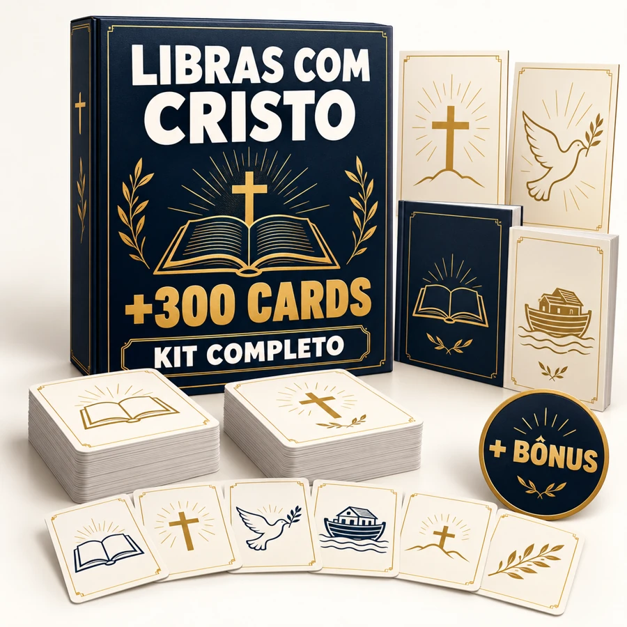
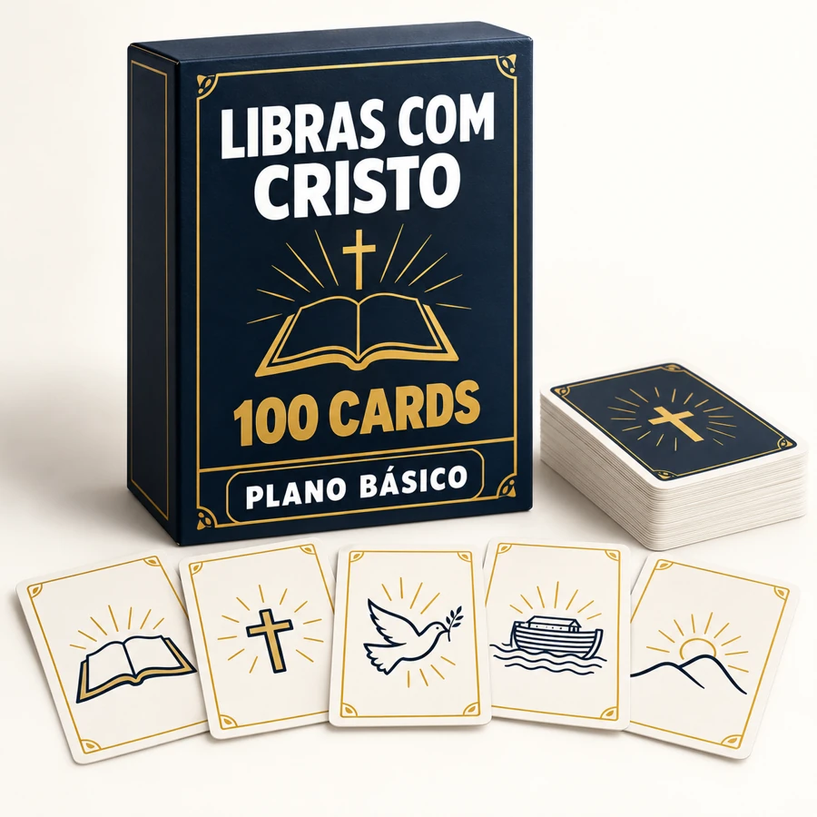

01 · ORAÇÕES
Pai Nosso e outras orações
Tenha apoio visual para preparar os momentos de oração.
PARA PROFESSORES E LÍDERES DE MINISTÉRIO INFANTIL
Histórias, personagens, orações e atividades visuais para usar na igreja ou em casa, sem criar cada folha do zero.
VER O KIT COMPLETO — R$27,90PDF para baixar e imprimir · Pagamento único · Garantia de 7 dias
+300 cards cristãos no Completo
DO PDF PARA A SUA ATIVIDADE
Este exemplo é “A criação em sequência”, do PDF de Dinâmicas Bíblicas incluído no Completo. As páginas abaixo fazem parte do material.
MENOS MATERIAL ESPALHADO
O kit é apoio visual para atividades cristãs. O uso dos sinais precisa de conhecimento em Libras e da mediação adequada às pessoas que participam.
O QUE TEM NO ACERVO
Escolha personagens e temas bíblicos no acervo do Completo e combine os cards com os PDFs de orações, cartazes, dinâmicas e jogos.
QUATRO EXTRAS DO COMPLETO
Veja páginas reais dos PDFs que acompanham o acervo no plano Completo.
01 · ORAÇÕES
Tenha apoio visual para preparar os momentos de oração.
02 · CARTAZES
Escolha mensagens para acompanhar a aula e o espaço do encontro.
03 · DINÂMICAS
Encontre propostas para organizar a participação do grupo.
04 · JOGOS E DESAFIOS
Varie as atividades de reconhecimento de personagens e revisão das histórias.
COMPARE E ESCOLHA
Por R$17,90 a mais que o Essencial, leve o acervo completo e os extras de jogos, cartazes, orações e dinâmicas.
| O que está incluído | Essencial R$10 | Completo R$27,90 |
|---|---|---|
| Cards cristãos em PDF | 100 cards | +300 cards |
| Orações e cartazes | Não incluídos | Incluídos |
| Dinâmicas, jogos e orientações | Não incluídos | Incluídos nos extras |
| Pagamento único e garantia de 7 dias | Sim | Sim |
PARA VARIAR AS ATIVIDADES

Todos os cards e os quatro PDFs complementares para preparar diferentes momentos.
PAGAMENTO ÚNICO
R$ 27,90
Produto digital · Nenhum item físico enviado.
Acesso após confirmação do pagamento.
Pagamento único · Garantia de 7 dias.
PARA COMEÇAR COM OS CARDS

Uma seleção de 100 cards cristãos em PDF. Os quatro extras do Completo não fazem parte deste plano.
PAGAMENTO ÚNICO
R$ 10,00
Produto digital · Nenhum item físico enviado.
Pagamento único · Garantia de 7 dias.
Você pode consultar as páginas para preparar as atividades. Para apresentar ou ensinar os sinais, precisa de conhecimento em Libras e da mediação adequada ao grupo. O kit é apoio visual para atividades cristãs e não substitui formação em Libras ou mediação profissional.
As propostas dos extras trazem orientações próprias. A dinâmica “A criação em sequência”, por exemplo, indica a partir de 6 anos; o guia de jogos sugere a partir de 7 anos. Escolha conforme a leitura, o interesse e as necessidades do grupo, sem aplicar uma única faixa etária a todo o acervo.
Sim, no Completo. O PDF de Jogos e desafios bíblicos inclui preparo, regras e peças. O PDF de Dinâmicas Bíblicas também traz objetivo, materiais e orientações para as propostas. As páginas da demonstração são desses extras.
Após a confirmação do pagamento, use as instruções de acesso da plataforma e confira o e-mail informado na compra. O material é digital; nenhum item físico será enviado. Você pode consultar os PDFs e imprimir as páginas que vai utilizar.
O Essencial reúne 100 cards cristãos. O Completo inclui mais de 300 cards e os quatro extras: orações, cartazes, dinâmicas e jogos. A diferença entre os preços é R$17,90.
Envie sua solicitação para librascomcristo@gmail.com, informando o e-mail utilizado na compra. Para reembolso, entre em contato dentro dos 7 dias de garantia, contados da compra.
Se o conteúdo não atender às suas expectativas, solicite o reembolso dentro do prazo de garantia, conforme as instruções da sua compra.
Conheça o acervo e os quatro extras do Completo, ou comece pelos 100 cards do Essencial.
VER O KIT COMPLETO — R$27,90PDF para baixar e imprimir · Pagamento único · Garantia de 7 dias